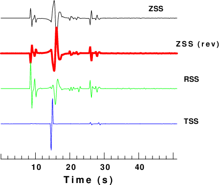
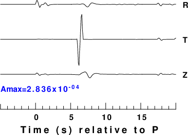

psac is a utility program for make plots of waveforms in SAC binary format. It can be used with calplt to annotate figures.
The output is a CALPLOT file named PSAC.PLT which can be viewed in X11 using the command plotxvig < PSAC.PLT or converted to EPS using the command plotnps -F7 -W10 -EPS -K < PSAC.PLT > epsfile
Although the gsac and plotsac programs of the Computer Programs in Seismology package can plot Sac files, it would be a major effort to modify these codes to create different types of trace plots. Thus the simple psac was created. Some examples of figures that were created using ,b>psac together with calplt are
psac does not have any command line flags, other than -h to remind the user of the usage. All commands are read in on the standard input. The standard input is read until an end of file. Except for the XAXIS command, each line of input consists of the following items:
cmd x0 y0 xlen ylen ipen fname
where the meaning of the various terms depends on the command.
cmd is a single quote delimited string of length less than 10 characters. x0, y0, xlen, and ylen are floats. ipen is in integer and fname is a single quote delimited string of length 80 characters.
The XAXIS option is followed by a single line with the minimum and maximum values of the time axis.
The commands and the meaning of the options are as follow:
| Syntax: 'command' x0 y0 xlen ylen ipen 'fname' | ||
| Command | Meaning | Details |
| 'TRACE' | plot a trace | The trace is plotted horizontally. It starts at (x0,y0) and extends xlen horizontally.
The maximum trace amplitude is ylen and the trace color is ipen fname is the name of the Sac file. If ylen is negative, the trace is inverted. |
| 'XAXIS' | Plot a time axis | The time axis is plotted horizontally. It starts at (x0,y0) and extends xlen horizontally.
ylen and ipen are place holders that are not used. fname is the single quote delimited title for the axis. This command is followed on the next line with tmin tmax which are the times at the beginning and end of the axis. |
| 'CENTER' | Center a character string | Plot a string centered at (x0,y0) with height ylen in color ipen.
fname is the single quote delimited string to be plotted |
| 'LEFT' | Left justify a character string | Plot a string starting at (x0,y0) with height ylen in color ipen.
fname is the single quote delimited string to be plotted |
| 'XF' | Increase font size of XAXIS string | xlen is the factor to increase the string font size |
| 'WIDTH' | Increase width of trace line | x0 width of line. The default is 0.001. However the default is overridden by the -Wwidth option of plotnps. |
| 'YMAX' | Plot absolute amplitudes | ylen is the the maximum amplitude to use in scaling the traces. |
First, make some synthetics:
#!/bin/sh
#####
# create a halfspace model and make
# synthetics
# the Green's functions are named 003000100.RDD
#####
# clean up
#####
rm -f *.[ZRT]??
HS=5 # source depth in km
R=50 # epicentral distance in km
DT=0.10 # sample interval in sec
NPTS=512 # number of points
#####
# create the model in model96 format
#####
cat > half.mod << EOF
MODEL.01
Simple halfspace model
ISOTROPIC
KGS
FLAT EARTH
1-D
CONSTANT VELOCITY
LINE08
LINE09
LINE10
LINE11
H(KM) VP(KM/S) VS(KM/S) RHO(GM/CC) QP QS ETAP ETAS FREFP FREFS
40.0 6.0 3.55 2.7 0 0 0 0 1 1
EOF
# dfile: DIST(km) DT(sec) NPTS T0(sec) VRED(km/s)
cat > dfile << EOF
$R $DT $NPTS 0 0
EOF
hprep96 -M SCM.mod -d dfile -EQEX -HS ${HS}
hspec96
hpulse96 -v -p -l 2 | f96tosac -G
Simple trace plot
#!/bin/sh
TMIN=0
TMAX=51.1
cat > psac.d << EOF
'TRACE' 1.0 6.0 5.0 1.5 1 '005000050.ZSS'
'WIDTH' 0.05 -1 -1 -1 -1 ' '
'TRACE' 1.0 5.0 5.0 -1.5 2 '005000050.ZSS'
'WIDTH' 0.00 -1 -1 -1 -1 ' '
'TRACE' 1.0 4.0 5.0 1.5 3 '005000050.RSS'
'TRACE' 1.0 3.0 5.0 1.5 4 '005000050.TSS'
'LEFT' 5.2 6.2 0.0 0.14 1 'ZSS'
'CENTER' 6.6 5.2 0.0 0.14 1 'ZSS (rev)'
'LEFT' 6.2 4.2 0.0 0.14 1 'RSS'
'LEFT' 6.2 3.0 0.0 0.14 1 'TSS'
'WIDTH' 0.01 -1 -1 -1 -1 ' '
'XN' -1 -1 -1 1.0 -1 ' '
'XAXIS' 1.0 2.0 5.0 0.0 1 'Time (s)'
${TMIN} ${TMAX}
EOF
psac < psac.d
# rename PLT file
mv PSAC.PLT 1.PLT
# use ImageMagick to make a PNG
for i in 1.PLT
do
B=`basename $i .PLT`
plotnps -F7 -W10 -EPS -K < $i > t.eps
convert -trim t.eps -background white -alpha remove -alpha off ${B}.png
cp t.eps 1.eps
rm t.eps
done
This produces the following figure:
 |
This plots the traces using absolute amplitudes. In addition the plot is annotated with the peak amplitude by using calplt. calplt interactively uses basic commands to make a plot. These are displayed using calplt -h. For more detail refer to the CALPLOT pdf.
#!/bin/sh
#####
# get the maximum amplitude of the traces to be plot
#####
#####
# cut the traces
####
gsac << EOF
cut a -5 a 20
r 005000050.RSS 005000050.TSS 005000050.ZSS
w R T Z
q
EOF
AMAX=0.0
TMIN=-5
TMAX=20
for TRACE in R T Z
do
DEPMAX=`saclhdr -DEPMAX $TRACE`
DEPMIN=`saclhdr -DEPMIN $TRACE`
# use awk to get absolute value
DEPMAX=`echo $DEPMAX | awk '{if($1 > 0) print $1;else print -1*$1}'`
DEPMIN=`echo $DEPMIN | awk '{if($1 > 0) print $1;else print -1*$1}'`
# get the larger value
AMAX=`echo $AMAX $DEPMAX | awk '{if($1 > $2) print $1; else print $2}' `
AMAX=`echo $AMAX $DEPMIN | awk '{if($1 > $2) print $1; else print $2}' `
done
cat > psac.d << EOF
'YMAX' -1 -1 -1 ${AMAX} -1 ' '
'TRACE' 1.0 5.0 5.0 1.5 1 'R'
'TRACE' 1.0 4.0 5.0 1.5 1 'T'
'TRACE' 1.0 3.0 5.0 1.5 1 'Z'
'LEFT ' 6.2 4.9 5.0 0.15 1 'R'
'LEFT ' 6.2 3.9 5.0 0.15 1 'T'
'LEFT ' 6.2 2.9 5.0 0.15 1 'Z'
'XAXIS' 1.0 2.0 5.0 -1 -1 ' Time (s) relative to P '
${TMIN} ${TMAX}
EOF
psac < psac.d
# rename PLT file
mv PSAC.PLT 2.PLT
# use calplot to annotte with maximum amplitude
calplt << EOF
NEWPEN
4
LEFT
1.0 2.5 0.15 'Amax=' 0.0
NUMBER
999. 2.5 0.15 ${AMAX} 0.0 2003
NEWPEN
1
PEND
EOF
cat CALPLT.PLT >> 2.PLT
# use ImageMagick to make a PNG
for i in 2.PLT
do
B=`basename $i .PLT`
plotnps -F7 -W10 -EPS -K < $i > t.eps
convert -trim t.eps -background white -alpha remove -alpha off ${B}.png
cp t.eps 2.eps
rm t.eps
done
this produces the following figure:
 |